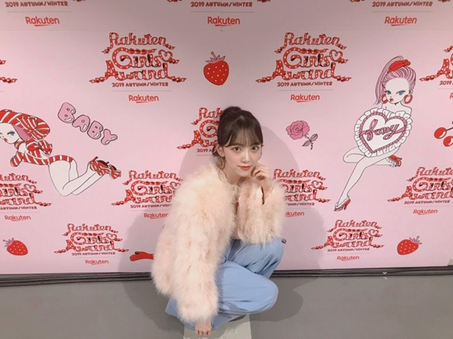

2019/1014Mon生クリームさん
みなさん、先日の台風の影響や被害は大丈夫でしょうか...
きっとニュースでは取り上げられていないところでも沢山辛い思いをした方がいらっしゃると思います...
いち早くの復興を願っています。
ダークナイトを観ていたら、うとうと寝てしまったのでまた観返したいと思います
映画を見ながら横になると絶対寝ちゃう！あかんやつ！
ジョーカー、もう1回観たいなぁ


ガールズアワードありがとうございました✨
GRLさんとSamanthavegaさんのステージに出させていただきました！
GRLさんでは赤茶色の秋らしいセットアップを着たのでメイクはクールめにしてリップは赤や茶色を重ね塗りしてヌーディーな感じにしました✨
Samanthaさんではふわふわのファーコートを着てかわいいBAGを持っていたのでツヤ肌、あざとピンクチーク、コーラルオレンジリップ、ふわふわポニーテールでわたあめのような女子感を強めてみました☺︎
ガルアワやTGCの時は服にメイクを合わせるのが楽しくていつも机に大量の化粧品を並べて、
るんるんしながらメイクしてます❤︎
うちわやボード、タオル嬉しかったです！ありがとうございます

爪を見せたいだけのポーズ
今日ネイル、キラキラピンクに変えたのでそれはまた載せます☺︎
ar発売中です✨✨
令和のモテ眉！！！
眉毛ってすごく大事。

ぜひ見てください~❤︎
ベレー帽欲しいなぁ
買おうかなぁ
みかん今日6個たべました
では
2019/10/14 20:12
コメント(440)
心配してくれてありがとう。
堀ちゃんは台風､大丈夫だった？
俺の住んでる地区は奇跡的に大丈夫だったけど周りの地区のほとんどが今も停電して断水しちゃってる(-""-;)
台風が来る前は､お湯を水筒に溜めたり懐中電灯を準備したりして神様がいるかとうかは分からないけど停電しないよう神頼みしてたよ(^^;
そのおかげか分かんないけど停電しなかったから､なんだか自分が住んでる場所を守ってくれてる氏神様の神社に御礼をしに行きたい気分です...


堀ちゃんは台風､大丈夫だった？
俺の住んでる地区は奇跡的に大丈夫だったけど周りの地区のほとんどが今も停電して断水しちゃってる(-""-;)
台風が来る前は､お湯を水筒に溜めたり懐中電灯を準備したりして神様がいるかとうかは分からないけど停電しないよう神頼みしてたよ(^^;
そのおかげか分かんないけど停電しなかったから､なんだか自分が住んでる場所を守ってくれてる氏神様の神社に御礼をしに行きたい気分です...
ガルアワからもう2週間も経つのね、、あっという間に年越しそう。堀ちゃん こんばんは！
最後の写真、路面電車の街のMVでご一緒だったひかりちゃんに似てる？眉毛かな。
ジョーカーを週末に観てきたよ。冷蔵庫に入るシーンが印象に残りました。あそこから緊張感が増したような。あと、物語全体を覆う重々しい音楽。チェロなのかな？とても良かった！ゴッサムシティーでレポート書いてみたくなったよ。
最後の写真、路面電車の街のMVでご一緒だったひかりちゃんに似てる？眉毛かな。
ジョーカーを週末に観てきたよ。冷蔵庫に入るシーンが印象に残りました。あそこから緊張感が増したような。あと、物語全体を覆う重々しい音楽。チェロなのかな？とても良かった！ゴッサムシティーでレポート書いてみたくなったよ。
眉毛濃ゆくて悩みだなぁ 学校の規則で剃ったらダメだから辛い。
堀ちゃんのメイク術とかほんとに勉強になる！
堀ちゃんのメイク術とかほんとに勉強になる！
堀ちゃんお疲れ様です！
堀ちゃんは台風の被害なかったですか？こちらは節水をお願いされています。
さて1日早いですがお誕生日おめでとうございます！この日を大切にそして楽しく過ごせることを願ってます！
みかん食べ過ぎやねん！ ではは
堀ちゃんは台風の被害なかったですか？こちらは節水をお願いされています。
さて1日早いですがお誕生日おめでとうございます！この日を大切にそして楽しく過ごせることを願ってます！
みかん食べ過ぎやねん！ ではは
未央奈～～～～～～～～～～～～。
ひさびさ～～～～。
「映画を見ながら横になると絶対寝ちゃう！あかんやつ！」って、わしもじゃ。
映画といわず、ドラマ見てても、つまらんと2秒くらいで落ちてまう。
また、更新してね。
じゃ。
ひさびさ～～～～。
「映画を見ながら横になると絶対寝ちゃう！あかんやつ！」って、わしもじゃ。
映画といわず、ドラマ見てても、つまらんと2秒くらいで落ちてまう。
また、更新してね。
じゃ。
最近、昼間に気絶レベルに眠気が襲ってくる時があるんですよね。
そんな時は、とりあえず座ります。
何なんでしょうかね？
そんな時は、とりあえず座ります。
何なんでしょうかね？
眉毛で印象ガラッと変わるよね～(^-^)
フライング誕生日おめでとうございます
誕生日おめでとう！
ブログ更新ありがとう！
気づいたらみかんが食べ頃の季節かー
そういえば明日未央奈の誕生日だね！
気づいたらみかんが食べ頃の季節かー
そういえば明日未央奈の誕生日だね！
未央奈ちゃんブログ更新ありがとう！
未央奈ちゃんは台風大丈夫でしたか？
そして、1日早いけど、誕生日おめでとうございます！
素晴らしい一日を過ごしてください！
ガールズアワードめちゃくちゃ可愛かったよ！
今度12月14日の名古屋の握手会行きます！
未央奈ちゃんと握手できたらいいなと思います！
なので、僕の名前覚えていてください！
これからも頑張ってください！
応援してます！
未央奈ちゃんは台風大丈夫でしたか？
そして、1日早いけど、誕生日おめでとうございます！
素晴らしい一日を過ごしてください！
ガールズアワードめちゃくちゃ可愛かったよ！
今度12月14日の名古屋の握手会行きます！
未央奈ちゃんと握手できたらいいなと思います！
なので、僕の名前覚えていてください！
これからも頑張ってください！
応援してます！
更新ありがとー
先のブログで大丈夫かなぁ～と書きましたが
元気そうで良かったぁー 安心したぁ～
明日！誕生日おめでとう！
あと、先のブログに乃木中の活躍にも感想入れて
おきましたが、気が向いたら読んで...（笑）
ではは、
先のブログで大丈夫かなぁ～と書きましたが
元気そうで良かったぁー 安心したぁ～
明日！誕生日おめでとう！
あと、先のブログに乃木中の活躍にも感想入れて
おきましたが、気が向いたら読んで...（笑）
ではは、
やほー！
ブログ更新ありがと(^O^)
いよいよ明日は誕生日だね！もちろん12時まで起きとくよ(＾ν＾)
ブログ更新ありがと(^O^)
いよいよ明日は誕生日だね！もちろん12時まで起きとくよ(＾ν＾)
堀ちゃん、ブログ更新待ってたよ。
堀ちゃんにしては久々の更新だね、
寂しかったな。
明日誕生日だね、先におめでとう言っとくね。
ここの長野は台風で大変なことになりましたが自分のとこは大丈夫でした。でも他人事とは思えません。
ダークナイトて寝ちゃえるやつなの?(笑)
ガールズアワードLINEでみたよ、堀ちゃんのべー
良かったよ。かわいかった。
ar見るからね。
みかんを毎日大量に食べると肌がみかん色になることがあるらしいからほどほどに。
6個くらいなら大丈夫だけどね(笑)
最後に、まただけど生誕おめでとう。
いくつになってもずーっと応援するからね。
堀ちゃん大好きだよー。
ではでは
バイバイキーン
堀ちゃんにしては久々の更新だね、
寂しかったな。
明日誕生日だね、先におめでとう言っとくね。
ここの長野は台風で大変なことになりましたが自分のとこは大丈夫でした。でも他人事とは思えません。
ダークナイトて寝ちゃえるやつなの?(笑)
ガールズアワードLINEでみたよ、堀ちゃんのべー
良かったよ。かわいかった。
ar見るからね。
みかんを毎日大量に食べると肌がみかん色になることがあるらしいからほどほどに。
6個くらいなら大丈夫だけどね(笑)
最後に、まただけど生誕おめでとう。
いくつになってもずーっと応援するからね。
堀ちゃん大好きだよー。
ではでは
バイバイキーン
こんばんみーお♪
ブログありがとう！
ジム帰りだよ〜
昨日は、台風の影響で
24時間営業の店舗以外のゴールドジムが休みだったので
今日、トレして来たよ☆
まだ、停電の所も多いし、今回は各地で
水害による深刻なダメージを
受けているよね。。。
根本原因としての温暖化問題を深刻に考えていかないと
人類ヤバいよね〜
自分達で自分達の首を絞めている感じ。。。
と、重い話題になってしまった。。
切り替えて！
あと、数時間で
23才だね〜
早いね〜
去年から何か変わったかなぁ〜？
今年は映画『ホット・ギミック』の主演が
やはり一番印象強いかなぁ〜
乃木坂を飛び出してのスクリーンの主演は
やっぱり、特別な事だったよね☆
あらためて、受賞もおめでとう！
今後の女優堀未央奈の礎になるね☆
あと、札コレも含めてのランウェイが
すっかり板についている感じがしたよ♪
なんか、ファッションショーでのみおも
良いんだよね〜
憧れていた時代を知っているから尚更なのかも。。
うん、良き良き♪
では、22才最後の時間を楽しんでね〜
23才になっても、宜しくね！
それでは、お聴きください
永井真理子で
『23才』。
わたる⊿
ブログありがとう！
ジム帰りだよ〜
昨日は、台風の影響で
24時間営業の店舗以外のゴールドジムが休みだったので
今日、トレして来たよ☆
まだ、停電の所も多いし、今回は各地で
水害による深刻なダメージを
受けているよね。。。
根本原因としての温暖化問題を深刻に考えていかないと
人類ヤバいよね〜
自分達で自分達の首を絞めている感じ。。。
と、重い話題になってしまった。。
切り替えて！
あと、数時間で
23才だね〜
早いね〜
去年から何か変わったかなぁ〜？
今年は映画『ホット・ギミック』の主演が
やはり一番印象強いかなぁ〜
乃木坂を飛び出してのスクリーンの主演は
やっぱり、特別な事だったよね☆
あらためて、受賞もおめでとう！
今後の女優堀未央奈の礎になるね☆
あと、札コレも含めてのランウェイが
すっかり板についている感じがしたよ♪
なんか、ファッションショーでのみおも
良いんだよね〜
憧れていた時代を知っているから尚更なのかも。。
うん、良き良き♪
では、22才最後の時間を楽しんでね〜
23才になっても、宜しくね！
それでは、お聴きください
永井真理子で
『23才』。
わたる⊿
お疲れ様です！
デコだしベレー帽の未央奈可愛すぎます♡
眉毛でこんなに印象変わるなんて、女の子無限大だしもっと楽しもうと思いました☺︎
未央奈にセルフメイク学びたいです！
デコだしベレー帽の未央奈可愛すぎます♡
眉毛でこんなに印象変わるなんて、女の子無限大だしもっと楽しもうと思いました☺︎
未央奈にセルフメイク学びたいです！
生クリームは甘さ控えめがいいな～
来ましたね～台風。
その翌日のお店ね。
商品が少なかったり、閉店していたり、らじ･･･
あらあら。
見たい番組？見逃しちゃったんですね。
私も過去に･･･それ以降
絶対に寝ながら観ない
という方針が確立されました(笑)
格好良い！
もこもこが～もこもこが～
眉毛さんや～～
イメージ変わるな～
帽子また増えちゃいますね(笑)
そっか～みかんの時期が･･･
あっ！乾燥対策ですかっ！
ツメブログ再び！(笑)
来ましたね～台風。
その翌日のお店ね。
商品が少なかったり、閉店していたり、らじ･･･
あらあら。
見たい番組？見逃しちゃったんですね。
私も過去に･･･それ以降
絶対に寝ながら観ない
という方針が確立されました(笑)
格好良い！
もこもこが～もこもこが～
眉毛さんや～～
イメージ変わるな～
帽子また増えちゃいますね(笑)
そっか～みかんの時期が･･･
あっ！乾燥対策ですかっ！
ツメブログ再び！(笑)
ブログ更新ありがとう
台風怖いね
地元の多摩川決壊するんじゃないかと
ヒヤヒヤでした(;´д｀)
お疲れ様なのです└(ﾟ∀ﾟ└) (┘ﾟ∀ﾟ)┘
実家、大丈夫だった？
こっちは大丈夫だったよ。
皆で乗り越えて行きましょう。
堀ちゃん可愛い(*≧з≦)よ
ネイルもキラッキラに輝いてるよ～(つд⊂)眩し
手も綺麗だね(≧ω≦。)私はゴツゴツだよ～(ノ∀≦。)ノ
体調に気を付けて
んじゃね～！Σ⊂(ﾟДﾟ ) 癒しです。
実家、大丈夫だった？
こっちは大丈夫だったよ。
皆で乗り越えて行きましょう。
堀ちゃん可愛い(*≧з≦)よ
ネイルもキラッキラに輝いてるよ～(つд⊂)眩し
手も綺麗だね(≧ω≦。)私はゴツゴツだよ～(ノ∀≦。)ノ
体調に気を付けて
んじゃね～！Σ⊂(ﾟДﾟ ) 癒しです。
堀ちゃん、ブログ更新ありがとう。
arの堀ちゃんとても可愛かったよ。
眉の色によって雰囲気の違う堀ちゃんが見れて良かったよ。
本格的に肌寒い季節になってきたので体調には気をつけてね。
arの堀ちゃんとても可愛かったよ。
眉の色によって雰囲気の違う堀ちゃんが見れて良かったよ。
本格的に肌寒い季節になってきたので体調には気をつけてね。
ファーコート似合うなぁ。ドフラミンゴか堀ちゃんか、ぐらい似合う。
色白で可愛くて羨ましいです
色白で可愛くて羨ましいです
未央さんいつもお疲れ様です
少し早いけどお誕生日おめでとう
こちらも早いけど2nd写真集
楽しみにしてるよー･`ω･´)
岐阜県は台風被害は大丈夫だったのかな？
これ女性の方なら常識かも知れないけど
眉はどうやって染めるのかな？
美容室にやってもらうのは
ダメって前、美容師さんに聞いたけど...
少し早いけどお誕生日おめでとう
こちらも早いけど2nd写真集
楽しみにしてるよー･`ω･´)
岐阜県は台風被害は大丈夫だったのかな？
これ女性の方なら常識かも知れないけど
眉はどうやって染めるのかな？
美容室にやってもらうのは
ダメって前、美容師さんに聞いたけど...
台風←各地に結構な被害出てるねぇ...(。>д<) ちなみに、自分の住んでる地域も多少の被害は出たけど。とりあえず、過ぎ去ってくれてよかったぁ。モテ眉←眉毛だけじゃなく、堀ちゃんは全てがモテ要素の結晶だと思う!!(*´-`)
ブログ更新ありがとう！
自分のところはなんとか被害なく台風過ぎました！
堀ちゃんも御無事なようで良かったです！
もうすぐ誕生日ですね！
自分のところはなんとか被害なく台風過ぎました！
堀ちゃんも御無事なようで良かったです！
もうすぐ誕生日ですね！
未央奈ー！
ベレー帽似合うな〜(^o^)
ベレー帽似合うな〜(^o^)
ブログ更新ありがとう！！
ガールズアワードお疲れ様、凄く可愛かったよ！
メイクしてる時って楽しんだね自分で言うところなにに当たるんだろう？本読んでるときかな？わかんないや笑
明日は誕生日だね！おめでとう
生誕T買ったよ！
工事中見たけど2期生みんな頑張ってたね！
凄くカッコよかった！！
最近気温が下がってきてるから、体調には気をつけないとね…
またね
ガールズアワードお疲れ様、凄く可愛かったよ！
メイクしてる時って楽しんだね自分で言うところなにに当たるんだろう？本読んでるときかな？わかんないや笑
明日は誕生日だね！おめでとう
生誕T買ったよ！
工事中見たけど2期生みんな頑張ってたね！
凄くカッコよかった！！
最近気温が下がってきてるから、体調には気をつけないとね…
またね
ブログ更新ありがとう！
ジョーカー観てみたいなって思ってたとこ
今年はガルアワもTGS行けなかったけど来年春のガルアワLine先行抽選で当選したから来年は絶対行くね
ジョーカー観てみたいなって思ってたとこ
今年はガルアワもTGS行けなかったけど来年春のガルアワLine先行抽選で当選したから来年は絶対行くね
ふわふわみおなちゃんかわいい（；＿；）
未央奈ブログ更新ありがとう！
台風大丈夫だった！！
普通にバイトしてた笑
明日は誕生日だね！！！
いい一日にしてね！
台風大丈夫だった！！
普通にバイトしてた笑
明日は誕生日だね！！！
いい一日にしてね！
ブログ更新ありがとう
未央奈ちゃんは台風大丈夫だった？
写真可愛いすぎ
もう少しで誕生日だね、少し早いけどおめでとう
未央奈ちゃんは台風大丈夫だった？
写真可愛いすぎ
もう少しで誕生日だね、少し早いけどおめでとう
未央奈どの写真も可愛いブログ更新ありがとう！
僕は台風大丈夫だったけど、誰かが辛い思いをしてると思うと悲しいことだよね。
映画見ながら寝ちゃうとか未央奈が疲れてるんじゃないかと心配。僕も毎朝早くて眠いけど。
ジョーカー観たいなあ。モバメと755の未央奈の感想見て気になってる。
ガルアワ良かったよ！さすが未央奈はメイクにこだわってるんだね。すごく可愛いかった。
未央奈は爪も綺麗。キラキラピンクも早く見たいな。
ar買ったよ！眉毛も色々あるんだね。僕はうぶピュア眉が自然で可愛いと思った。
未央奈ベレー帽似合うよね。あとおでこ出してるのも可愛い。
みかんはビタミンCが身体に良さそうだけど6個は食べすぎでしょ。笑
でもそんないっぱい食べるところも未央奈らしくて好き。
では！
僕は台風大丈夫だったけど、誰かが辛い思いをしてると思うと悲しいことだよね。
映画見ながら寝ちゃうとか未央奈が疲れてるんじゃないかと心配。僕も毎朝早くて眠いけど。
ジョーカー観たいなあ。モバメと755の未央奈の感想見て気になってる。
ガルアワ良かったよ！さすが未央奈はメイクにこだわってるんだね。すごく可愛いかった。
未央奈は爪も綺麗。キラキラピンクも早く見たいな。
ar買ったよ！眉毛も色々あるんだね。僕はうぶピュア眉が自然で可愛いと思った。
未央奈ベレー帽似合うよね。あとおでこ出してるのも可愛い。
みかんはビタミンCが身体に良さそうだけど6個は食べすぎでしょ。笑
でもそんないっぱい食べるところも未央奈らしくて好き。
では！
うとうとみおな(。-ω-)zzzいと可愛い♪ヽ(´▽｀)/おやすみなさい
未央奈 Happy Birthday
2nd写真集も発売決定したし23歳も未央奈らしく体調には気をつけて笑顔で頑張って
みかん6個は食べ過ぎ笑笑
ジョーカーまだ観てないから観たいなー！
アナベルの4D観たけど結構怖かった\=͟͟͞͞(꒪ᗜ꒪ ‧̣̥̇)/
観た映画ブログに書いてねー！待ってる！！
2nd写真集も発売決定したし23歳も未央奈らしく体調には気をつけて笑顔で頑張って
みかん6個は食べ過ぎ笑笑
ジョーカーまだ観てないから観たいなー！
アナベルの4D観たけど結構怖かった\=͟͟͞͞(꒪ᗜ꒪ ‧̣̥̇)/
観た映画ブログに書いてねー！待ってる！！
みおな誕生日おめでとう
これからもずっと応援してます
これからもずっと応援してます
こんばんは。ブログ更新ありがとうございます。
私は千葉県人なので、台風15号で停電をくらいましたが、19号では網戸が外れたくらいで、大きな被害はありませんでした。連日TVで被害の状況がわかってくるにつれ、自分はラッキーだったなと思います。台風の被害に遭われた方、お見舞い申し上げます。
ガルアワ、お疲れ様でしたー。乃木坂46も知名度が上がって、女性ファンもたくさんついて、国民的アイドルと呼んでも良いかな？というところまで来ましたね～。あとはCDの売り上げでAKB48を抜ければ完璧なのですが…。
ではまた。
私は千葉県人なので、台風15号で停電をくらいましたが、19号では網戸が外れたくらいで、大きな被害はありませんでした。連日TVで被害の状況がわかってくるにつれ、自分はラッキーだったなと思います。台風の被害に遭われた方、お見舞い申し上げます。
ガルアワ、お疲れ様でしたー。乃木坂46も知名度が上がって、女性ファンもたくさんついて、国民的アイドルと呼んでも良いかな？というところまで来ましたね～。あとはCDの売り上げでAKB48を抜ければ完璧なのですが…。
ではまた。
みかん６個だってぇ！笑
セルフメイクだなんて！本当にみおなはメイクが上手だね。うらやましい。（*'‐'*)♪
中学生のふくふくより
セルフメイクだなんて！本当にみおなはメイクが上手だね。うらやましい。（*'‐'*)♪
中学生のふくふくより
可愛すぎる
1日早いけどお誕生日ありがとう！！堀ちゃんがいて、堀ちゃんが乃木坂に入ってくれたおかげで女らしく化粧したり可愛い服を着たりしたいなって思えたし、乃木坂を好きになるきっかけになったし、とにかく堀ちゃんが大好きです！！生まれてきてくれてありがとう！これからも体に気をつけて頑張って下さい！！
今晩は!先日のGirlsAwardお疲れ様です!
愛知県岐阜県は別に台風による被害はなかったんですけれども、三重県は浸水被害が相次ぎましたね!
其方ですけれども、台風による被害はなかったでしょうか？
今報道番組を見ましたけれども、全国各地で台風19号による被害は予想を超える自体になりましたね!
改めて自然の恐ろしさを思い知らされましたね!
明らかに大雨による被害は確実に増えているのは間違いないないですし、今後俺と未央奈ちゃんの出身地である東海地方でも同じ様な災害あるいはそれ以上の災害が発生してもおかしくないでしょうね!
お互い災害などには呉々も気を付けよう!
1日早いですけれども、23回目の誕生日おめでとう
俺も先週28回目の誕生日を迎えましたが、お互い良い1年にして行きましょう!
其れではお休みなさい!
ブログありがと！！
明日誕生日だね！
私もジョーカーめっちゃ見たいんだよね
一緒にみたいな〜笑笑
明日誕生日だね！
私もジョーカーめっちゃ見たいんだよね
一緒にみたいな〜笑笑
ブログ更新ありがとう。未央奈ってやっぱり可愛いね。乃木中は惜しかったね。少しの差だったとおもうよ。ジャージ姿でも、オーラが出てる感じだからどこにいるかすぐわかるよ。それなのにオシャレして、バシッとメイクされたら、もう降参です。もうすぐバースデーですね。年が明けると年女だし、写真集発売だし、2019年同様忙しくなりそうですね。ますます推して参りますので、身体に気を付けてね。ではは
みおなちゃん〜
中学生だけどみおなちゃんメイク参考にさせてもらってます！
写真集買います
中学生だけどみおなちゃんメイク参考にさせてもらってます！
写真集買います
はじめまして
明日誕生日なんですね！お誕生日おめでとうございます。
乃木坂2期生ももう7年？ぐらい経つんですよね。
早いですね。僕の中で未央奈さんは乃木坂2期生で一番カッコいい存在です。
誕生日を迎えてどんな心境ですか？
僕は、23歳の未央奈さんが充実した一年間を過ごせるように願ってます。
これからも頑張ってください。応援してます。
明日誕生日なんですね！お誕生日おめでとうございます。
乃木坂2期生ももう7年？ぐらい経つんですよね。
早いですね。僕の中で未央奈さんは乃木坂2期生で一番カッコいい存在です。
誕生日を迎えてどんな心境ですか？
僕は、23歳の未央奈さんが充実した一年間を過ごせるように願ってます。
これからも頑張ってください。応援してます。
ブログ更新ありがとう！
もうすぐ23歳だね！
一足先におめでとうございます ✨
ベレー帽似合ってて可愛いね
もうすぐ23歳だね！
一足先におめでとうございます ✨
ベレー帽似合ってて可愛いね
未央奈ちゃんブログ更新ありがとう！
ガルアワお疲れ様！
LINELIVEの方で見てたよ！
未央奈ちゃんのランウェイ歩く姿めっちゃ良かったよ！
また出られるといいね！
もうすぐお誕生日だね！
おめでとう
またコメントします！
ガルアワお疲れ様！
LINELIVEの方で見てたよ！
未央奈ちゃんのランウェイ歩く姿めっちゃ良かったよ！
また出られるといいね！
もうすぐお誕生日だね！
おめでとう
またコメントします！
みかん6個はすごいね！食べたことないや。
飽きないの？
飽きないの？
ブログ更新ありがとうございます。
僕は台風大丈夫でした。未央奈さんは大丈夫でしたか？
未央奈さんのベレー帽姿めっちゃ可愛いです!!
明日は未央奈さんのお誕生日ですね、写真集も楽しみです。体に気をつけて無理しない程度に頑張って下さい!
僕は今めちゃくちゃ具合が悪いですw
僕は台風大丈夫でした。未央奈さんは大丈夫でしたか？
未央奈さんのベレー帽姿めっちゃ可愛いです!!
明日は未央奈さんのお誕生日ですね、写真集も楽しみです。体に気をつけて無理しない程度に頑張って下さい!
僕は今めちゃくちゃ具合が悪いですw
未央奈早いけど誕生日おめでとー！
可愛すぎて発狂もんです。


台風の大雨の影響でうちは庭がまだぐっちゃぐちゃです泣
未央奈の実家は大丈夫でしたか？
未央奈はメイク自分でするんだね！いつもきれいですごい、、
プライベートだったらいつもメイクと髪にどのくらい時間かけてるか知りたい！
また女子向けブログあげて欲しいなぁ
それとみかん6個も食べたら黄色くなるよ！笑